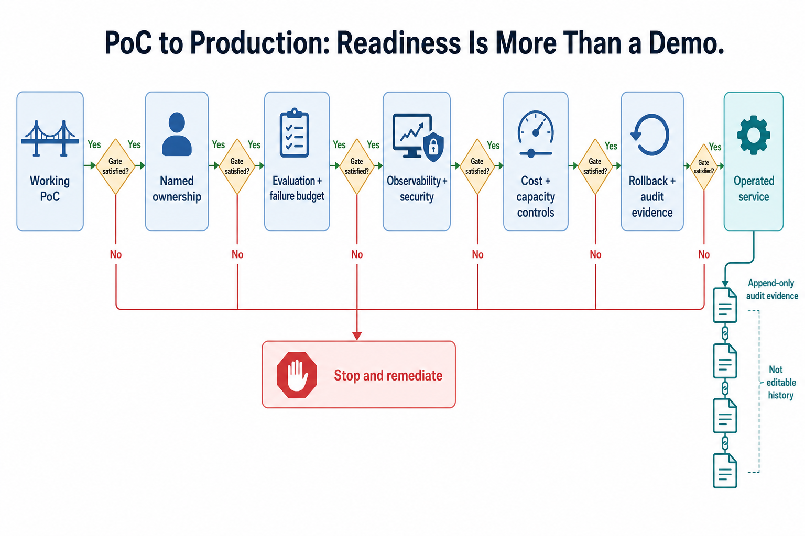
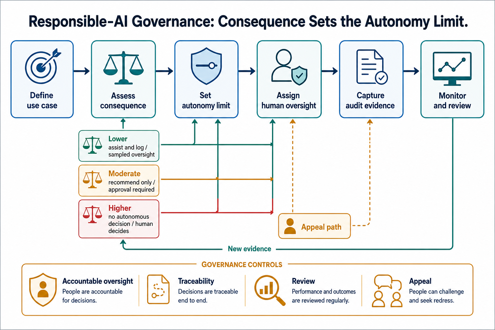
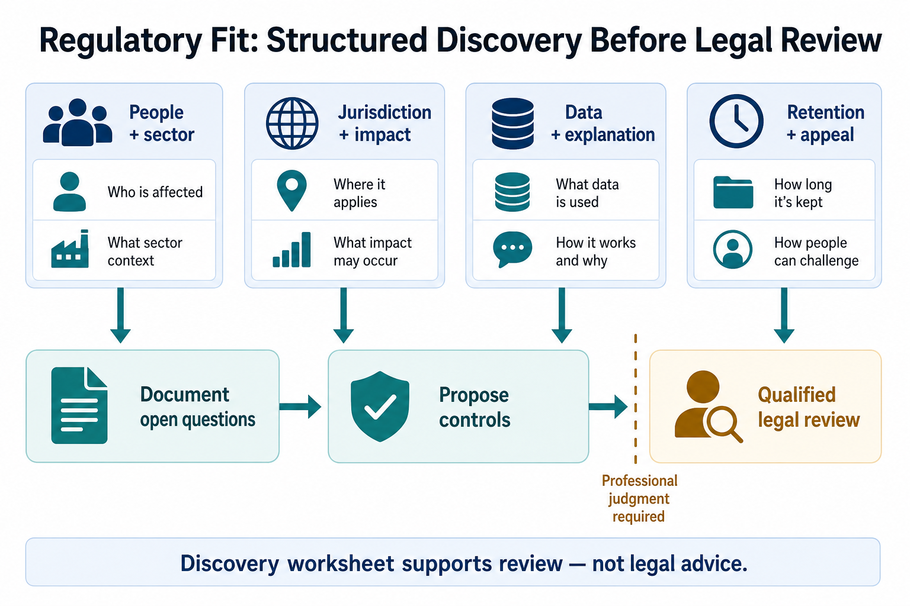
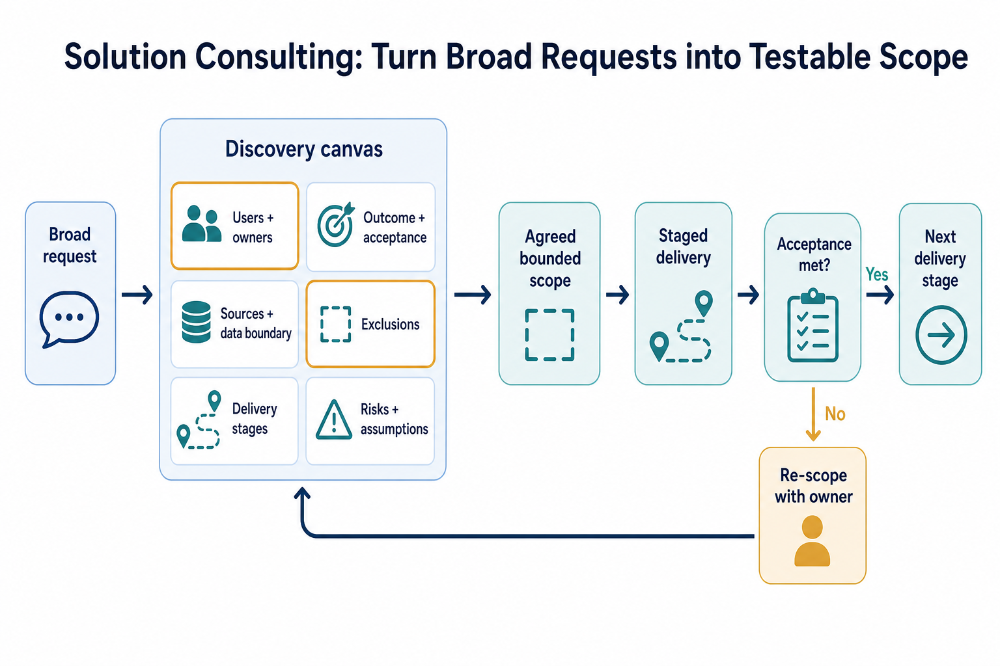
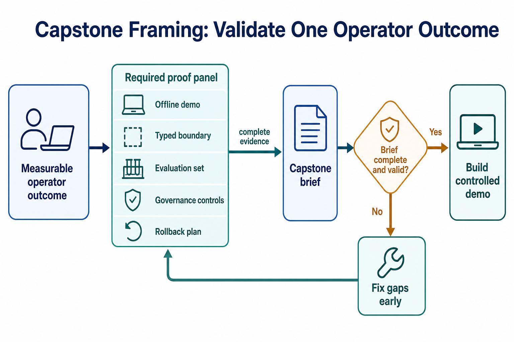
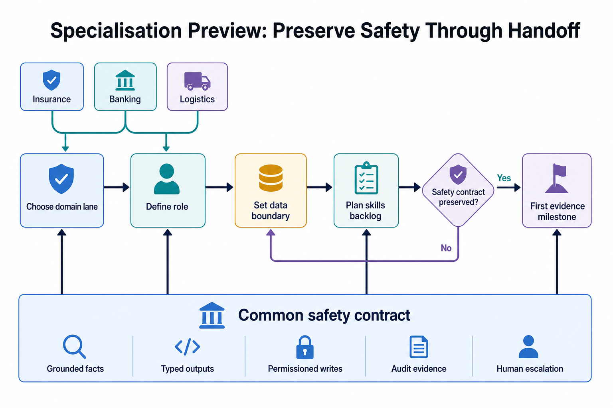

Bridge (16:00–16:05)
conda activate ai_agent_env
python -c "import json; print(len(json.load(open('data/governance/use_case_risk_tiers.json'))['use_cases']), 'use cases loaded')"Topic 01 · From PoC (Proof of Concept) to production
Concept. Common pitfalls that keep a PoC from becoming production: over-automation (no human in the loop for consequential actions), weak evals (Day 4's whole session existed to close this gap), no guardrails, and cost blow-ups. What separates the roughly 57% of organizations now running agents in production that actually work is usually not a smarter model — it's these unglamorous controls, all things you've built this week.

Run it together, variation A — the chain as shipped. VS Code terminal:
uv run python W2D5/snippets/audit_chain.pyYou should see chain valid before tamper: True then chain valid after tamper: False.
Run it together, variation B — readiness gates, for contrast. Claude Code chat panel:
Score our week's insurance assistant against 5 production-readiness
gates. Read ONLY the one file named per gate -- don't search for
alternatives or anything broader:
(1) guardrails: W2D4/snippets/pii_guardrail.py and
W2D4/snippets/injection_scanner_fixed.py
(2) evals with a quality floor: W2D4/snippets/trajectory_eval.py +
data/eval/trajectory_goldens.json
(3) approval-gated writes and (4) durable HITL checkpoints:
W2D2/hitl_demo.py
(5) audit trail: W2D5/snippets/audit_chain.py
For each gate, cite the specific function/mechanism in that one file as
evidence, or say honestly "not built" if the named file doesn't actually
cover it.Learners repeat. Try tampering with a different (later) entry in the chain and confirm verification still correctly catches it.
Topic 02 · Responsible-AI governance for agents
Concept. Meaningful human oversight scales inversely with risk: low-tier use cases can act with light oversight, high-tier ones (regulated, safety, employment, credit, or otherwise consequential) stay at "recommend" or "human_decides," never full autonomy — a dial you turn down as consequence goes up, not a fixed setting.

Run it together, variation A — the matrix as shipped. VS Code terminal:
uv run python W2D5/snippets/autonomy_matrix.pyAll 5 real use cases should show OK — the fixture is deliberately well-designed.
Run it together, variation B — inject a violation, for contrast. Claude Code chat panel:
Add a 6th use case to a scratch copy of use_case_risk_tiers.json:
{"id": "auto-payout", "name": "Automatic high-value payout", "tier":
"high", "autonomy": "act"}. Re-run autonomy_matrix.py against the scratch
copy. Confirm it correctly FLAGs this one, and explain in one sentence
why "act" is wrong for a high-tier use case.Learners repeat. Have Claude Code produce a short "governed model/agent card" for our insurance assistant: name, tier, autonomy level, and the controls in place.
Topic 03 · Regulatory fit in 2026
Concept. The EU AI Act's Annex III high-risk categories (with Digital Omnibus deferral to December 2027) and Article 50 transparency duties, India's DPDP Act, NIST's AI RMF, and ISO/IEC 42001 all converge on the same engineering asks this week already answers: can you explain a decision, can you audit it, can a human override it, is personal data handled lawfully. Extraterritorial reach matters directly for India-based delivery to EU clients.

Instructor drives live. Claude Code chat panel — turn regulation into engineering questions, not legal advice:
For our insurance claims-triage use case (tier: high, per
data/governance/use_case_risk_tiers.json -- already loaded at the bridge,
no need to reread it), list the concrete engineering questions a
legal/compliance reviewer would ask under (a) EU AI Act high-risk
obligations and (b) India's DPDP Act, IF this system were serving EU or
Indian customers. For each question, check ONLY against these control
files (same ones as Topic 01): W2D4/snippets/pii_guardrail.py,
W2D4/snippets/injection_scanner_fixed.py, W2D4/snippets/trajectory_eval.py
+ data/eval/trajectory_goldens.json, W2D2/hitl_demo.py, and
W2D5/snippets/audit_chain.py -- name which one answers it, or admit none
does yet.Learners repeat. Name the one control gap from this exercise you'd prioritize closing first if this were a real EU-facing deployment.
Topic 04 · Solution consulting
Concept. Discovery, scoping, stakeholder alignment, and build-vs-buy all converge on one deliverable: a scope contract that excludes unsafe autonomy up front and makes acceptance testable — not "the client will know it when they see it."

Instructor drives live. Claude Code chat panel:
Write a one-page scope contract for extending our insurance assistant to
a new client. Base "in-scope capabilities" only on the five
app/my_dayN_resolve.py files (day1 through day5) built this week -- list
their filenames, don't reread every other snippet. Include: those
in-scope capabilities, explicitly EXCLUDED autonomy (name what it may
never do without a human), and 3 testable acceptance criteria (each one
something we could actually run and check, like
W2D5/snippets/autonomy_matrix.py did).Learners repeat. Add one more explicitly-excluded capability to the contract.
Topic 05 · Capstone framing
Concept. A capstone brief needs a real industry problem, defined success metrics, and an eval plan — and it should be rejected if it's missing any of: a truth source, an eval, write controls, or a rollback plan. That's not a bureaucratic checklist — it's exactly the shape of what you built this week.

Build it together, variation A — draft the brief. Claude Code chat panel — this is the week's culminating artifact:
Write a one-page capstone brief for our insurance ticket-resolution
assistant. Ground each section in exactly one named source and read
nothing beyond it:
- the problem and truth source: data/insurance/policies/ +
data/insurance/claims.db (describe from what you already know of them --
don't reread all ten policy docs)
- the eval plan: W2D4/snippets/trajectory_eval.py +
data/eval/trajectory_goldens.json (trajectory eval), and
W2D4/snippets/injection_scanner_fixed.py +
data/eval/adversarial_prompts.json (injection eval) -- cite their actual
quality-floor numbers
- the write controls: W2D2/hitl_demo.py
- the rollback plan: describe it conceptually, no file backs this one
- this morning's ROI numbers: reuse the numbers from this conversation's
own W2D5 AM Topic 06 run, don't re-run the script
Cite the specific file behind each claim; don't pull from anywhere else.Validate it, variation B — the rejection check, for contrast.
Now audit your own brief: does it name a truth source, an eval with a
number, a write control, AND a rollback plan? If any is missing or vague,
say so honestly and fix it before calling the brief done.Learners repeat. Save the finished brief — you'll reference it in the closing assessment.
Topic 06 · Specialisation preview
Concept. Week 3 branches into the DM (Data Management) track and three DE (Digital Engineering) tracks — AI Engineering/GenAI, Agentic CX (Customer Experience), and Low-Code/No-Code. Whichever lane you head into, the controls from this week (grounding, guardrails, approval gates, evals) need to travel with you, not get left behind as "Week 2 stuff."

Instructor drives live. Claude Code chat panel:
For each of the four Week 3 lanes (DM, AI Engineering/GenAI, Agentic CX,
Low-Code/No-Code), name ONE thing from this week that would matter most
in that lane specifically. Then produce a short "handoff card": what
must NOT be lost regardless of which lane a learner picks (name the
specific controls, not a generic "keep doing guardrails").Learners repeat. Pick the lane you're most drawn to and name the one skill from this week you'd want to go deeper on there.
App build — capstone (19:00–19:30) · Day 5 of the progressive insurance app
This is the last increment of the pipeline you've built one PM slot at a time across all five days — Day 1's grounded lookup, Day 2's triage/authorization handoff, Day 3's RAG (Retrieval-Augmented Generation) grounding and fraud signal, Day 4's injection scan and PII (Personally Identifiable Information) redaction. Today adds governance on top: every call gated against a real risk tier before it's allowed to run, every decision written to a tamper-evident audit chain — then, for the first time, you run the complete pipeline against the whole inbox in one shot.
Direct Claude Code to build a new file that imports and extends your own Day 4 file — do not overwrite anything under app/:
Create app/my_day5_resolve.py that imports resolve_email from my
Day 4 file (app/my_day4_resolve.py) and wraps it with two things:
1. A governance gate. Before any lookup runs, read
data/governance/use_case_risk_tiers.json, find the "claims-triage"
use case, and check its declared autonomy against its risk tier
(tier "high" should never exceed "recommend" autonomy). If the check
ever fails, refuse to run at all rather than proceeding anyway.
2. A persisted, tamper-evident audit chain. For every resolve_email
call, append an event (email_id, claim_id, escalate, injection_blocked,
fraud flag, autonomy level) to a hash chain where each entry's hash
incorporates the previous entry's hash, so mutating any past entry
breaks verification. Persist it to a JSONL file so it survives across
runs, and add a verify() method. Attach audit_record_hash and
audit_chain_valid to each result.
Also add resolve_all() that runs every row in data/insurance/fnol_emails.csv
through my_day5_resolve.resolve_email and returns a summary: total,
grounded_replies, escalated, injection_blocked, audit_chain_valid,
audit_entries.Then check the governance entry and a single-claim run directly:
VM terminaluv run python -m app.my_day5_resolve CLN-001This is the payoff of the whole week, not just today's slot: every email in the real inbox, through the complete Day 1–5 pipeline, in one call.
Run resolve_all() from app/my_day5_resolve.py and print the summary as
JSON. Then tell me honestly whether it matches this reference summary,
field by field, and explain any difference:
{"total": 12, "grounded_replies": 8, "escalated": 4,
"injection_blocked": 0, "audit_chain_valid": true, "audit_entries": 12}uv run python -m app.autonomy_check shows the real claims-triage entry as tier high, autonomy recommend (never act), correctly within bounds — day5_resolve.py gates every call against this exact entry and refuses to run at all if a declared autonomy ever exceeded what its tier allows. A single-claim run (uv run python -m app.day5_resolve CLN-001) adds a real sha256 audit_record_hash and audit_chain_valid: true to the result. The chain's own tamper demo (uv run python -m app.audit_chain) shows chain valid before tamper: True, then, after directly mutating a past entry's event data, chain valid after tamper: False — append-only by construction, not convention, because each entry's hash incorporates the previous entry's hash. The full-inbox run (uv run python -m app.day5_resolve --resolve-all) reports {"total": 12, "grounded_replies": 8, "escalated": 4, "injection_blocked": 0, "audit_chain_valid": true, "audit_entries": 12}. One honest closing bug: the claims knowledge graph fixture (data/insurance/claims_kg.json) only covers a demo subset of claims, not every claim in claims.db — running the fraud-signal check against a claim outside that subset originally crashed with a NetworkXError. The fix made graph_signals.py treat "claim not in the graph" as "no signal available" (return None/[]), not a crash — the same "escalate/no-answer beats a fabricated or crashed answer" instinct this whole course teaches, just applied to code robustness instead of a policy answer.
That's the end of the progressive app: the pipeline built incrementally across Days 1–5 — grounded lookup, triage handoff, RAG grounding, guardrails, and now governance and audit — is complete, tested, guarded, and audited.
Reference implementation (only if the build gets stuck)
A complete, tested version is at app/day5_resolve.py, app/audit_chain.py, and app/autonomy_check.py — verified against all the numbers above, including the full resolve_all() summary. Use it to compare after you've built your own, not as the first attempt.